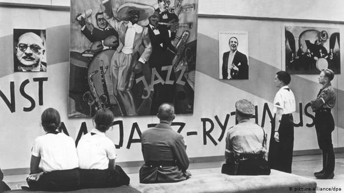
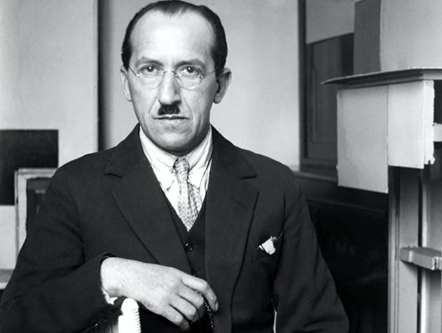
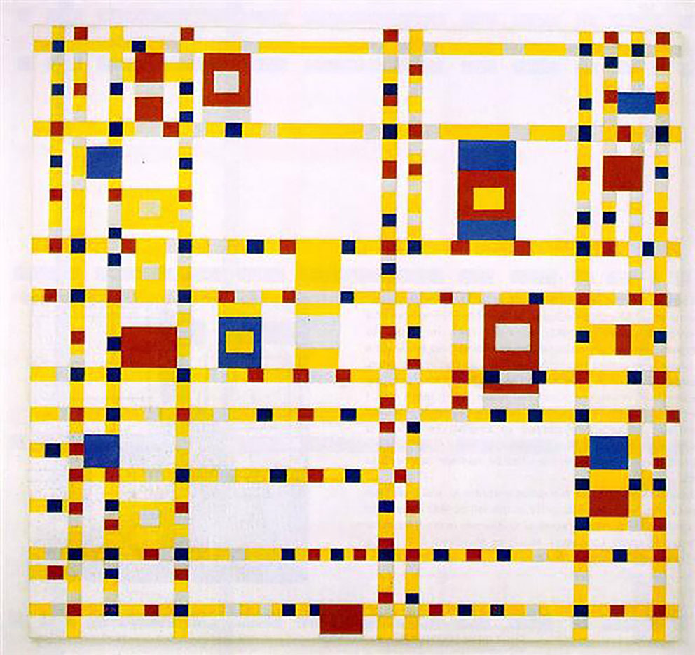
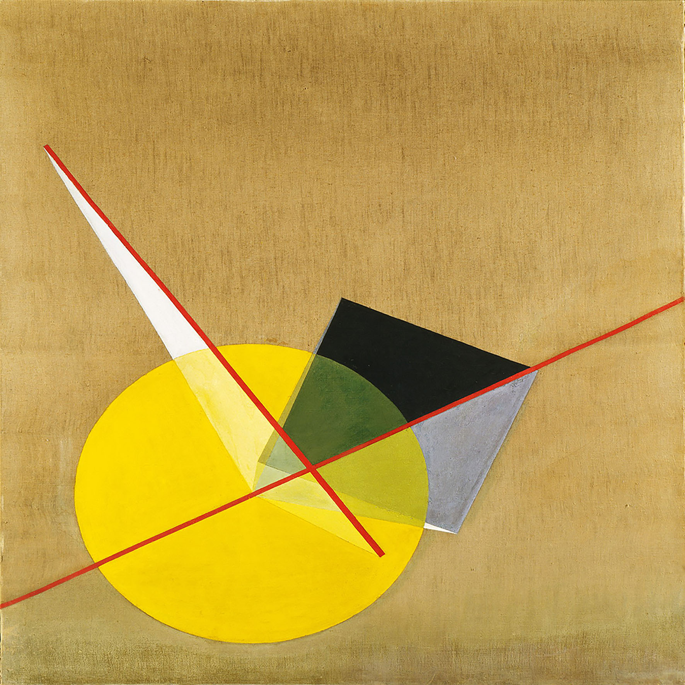

Introduction
During world war II the relationship between art and politics was a sad yet pivotal one. Many artists found themselves in the most difficult of positions, either being reprimanded, in an occupied country or in death camps. Art during the war had a special capability, it gave people and artists a voice to speak out about their beliefs. ‘Art had the power to influence and was able to portray a group of people, a community and a nation’(bbcnews.com, 2013)
History
'Degenerate Art'
Adolf Hitler- leader of the Nazi party, was aware of this influence art had and then had to take that away. The control of art and other cultural aspects was an important part of the establishment of power. He had reign over Germany from 1933 until 1945, and four years after the Nazi party came to power they put on two art exhibitions.(bbc.news, 2013)
‘The ‘Degenerate Art Exhibition’, held in Munich being the most famous one, attracted more than a million visitors. The exhibition displayed artists’ work such as Joseph Geobbels, Paul Kee and Oscar Kokoschka in a degrading and mocking way(bbcnews.com, 2013). ‘The Nazi government belived that modern art was taking away from the purity of the German race and was simply ‘Un-German’’. This ‘Degenerate’ exhibition displayed modern art in unflattering ways and had degrading comments around the art itself. The aim here was to convince visitors that modern art such as this had no contribution to the German culture and furthermore was an ‘attack on the people of Germany’(bbcnews.com, 2013).

Fig.2
Hilter was an artist before becoming a politician but his realistic landscapes and scenic images did not impress the art establishment and he was dismissed in favour of modern style and abstract art. This ‘Degenerate art exhibition’ was his way of revenge on those who ‘wronged’ him and his own art. As the situation in Europe worsened during the late 10930’s artists fled to countries like Britain and America, in hopes of a better life and a life where they can pursue their artistic needs and dreams.(bbcnews.com, 2013) Some fled by choice, but others were forced into exile by Adolf Hilter, most famously Piet Mondrian and the painter Josef Herman also had to leave Poland.’There are lesser known figures who found refuge in places like Britain such as female vetern documentary photographer Dorothy Bohm.(‘Piet Mondrian’s flee from Paris’,Javier Pies, online, 2018).
Paris during the 1930’s was the creative hub of the world, with the most well renowned artists living, working and communicating ideas there every day. Mondrian was well established there and had moved to Paris during 1911 from the Netherlands and was inspired by Vincent Van Goghs use of bright colours and expressive brushstrokes, his art then developed to more geometric shapes and abstract connotations.(pietmondrian.com 2020) With modernism booming in Paris Hitler knew in order to attain full power over all art in Europe, Paris was the main country he had to take over. Mondrian fled paris after the bombing and moved to New York where he would help to change the face of art and design in America forever.
Piet Mondrian
Piet Mondrian is the perfect example of one of the artists that helped to change art in America due to the Nazi Persecution. After fleeing to New York from Paris he joined a small group of abstract artists and he flourished from there. ‘He believed that abstract art was more spiritual and a more pure form of expression’(Froyle Davis, online, 2020), because of this he became an important leader of modern abstract art.
Fig.3
He is best known for being one of the founders of De Stijl. De stijl was a movement that was created to move away from traditional art and to encourage the use of simplistic, abstract art, with the use of straight lines, primary colours and geometric shapes(The Art Story, online, 2020).‘The representational world was chaotic, but harmony could be found in simplification. Mondrian’s theories on art were outlined in his writings on Neoplasticism.’ (Froyle Davis, online, 2020)
“Abstract art is not the creation of another reality but the true vision of reality.” — Mondrian. (Froyle Davis, online, 2020)
Mondrians’ flee to New York was revolutionary for the young abstract artist that lived there, he also encouraged young impressionists and colour field painters, as this was the area of art he had begun, that abstract art is the new form of expression and the way forward for the 20th century. His work wasn't just loved in the art world but other people took fascination with his work and incorporated it in other areas, such as fashion, architecture and interior design(britannica.com, 2020). He helped change art in America, which may not have been so prevalent without the Nazi governemnt forcing him to immigrate.
Fig.4
His most famous and latest piece was painted in New York, the ‘Broadway Boogie Woogie’. He stated quite poetically that this piece was about ‘The walk from the country to the city’(New York: The Museum of Modern Art,online, 2019), which could be a reference to his escape from Europe to New York because of the Nazi governement, or his transistion from scenic paintings to his abstract geometric shapes that brought him his fame. Or it could be both.
Mondrian's groundbreaking compositions are still used today and have been for years after his passing. The simplistic forms and colours are still iconic in the world of Architecture and design. Not only are his theories of neo-plasticism revolutionary to the world of art and design but also it has to be admired at how Piet had the courage, like many other exiled artists, to follow his passion in another country where he was unfamiliar.
Others
László Moholy-Nagy
Moholy-Nagy was another avant-garde artist from Hungry that was sent into exile because he was a foreign citizen working in the Netherlands in 1933. He moved to London first, then in later years he emigrated to America. He too, like many talented European artists was a professor in the Bauhaus,(‘László Moholy-Nagy - Biography and Legacy’,theartstory.com, 2020),he was highly influenced by constructivism and believed greatly in the integration of technology in the arts, furthermore making him the perfect modern artist during the late twentieth century.
Fig.5
It is said that his greatest accomplishment was the ‘School of Design’ in Chicago. Moholy created this school as the ‘New Bauhaus’ as the original was shut down by the Nazi government.(Collection Online, Guggenheim.com,2020). Moholy wanted a similar school for people who loved modern art like he did. He is also known for his experimental photography and during his teaching in America he continued to explore his artistic journey by constantly trying various mediums and new techniques.(Collection Online, Guggenheim.com,2020)
He was especially intrigued by the transparent properties of Plexiglas, with which he made his Space Modulators, hand-molded hybrids of painting and sculpture that cast shadow effects’(Collection Online, Guggenheim.com,2020). Moholy-Nagy was always seeking out new materials and was forever looking for new ways to work.
Josef Albers
Albers was born in Germany and he, like Moholy, taught at the Bauhaus and moved to America. He was a believer in abstraction and modernism and is best known for his iconic square paintings and his ‘Homage to the square’ series. He created hundreds of paintings of nested squares in various colours.(Phaidon.com, 2019)
Fig.6
His career condemned him as one of the most influential teachers of the twentieth century. During his career in America he taught at the Black College Mountain in North Carolina, after this he was hired as the head of design at Yale university during the 1950’s.In 1963 he wrote one of the most influential books for contemporary arts education called ‘Interaction of colour’.(‘The abstract life of Josef Albers, online, 2019) His theories on color and abstraction are still used today and without the closing of the Bauhaus by the Nazi Government, his success in America and his worldwide admiration may not have happened.
"Abstraction is real, probably more real than nature." - Josef Albers
Conclusion
Through researching and learning about the brave and persistent artists thrive under unimaginable conditions was inspiring. Many of these artists and designers brought over their own styles and views on design to America, ultimately changing surrounding artists and the onlookers views on the possibilities of modern art. These artists were at a disadvantage because they had to flee to unknown countries and restart their careers and lives, but in the midst of this chaos they succeeded greatly, changing the way the world sees modern art. Finally, in an attempt of suppressing the unique ideas and theories of modern art the Nazi government actually only forwared these revelations onto America.